この会の企画・会場設備の提供をして頂きました
㈱ ワークスアプリケーションズ様
にこの場をお借りして御礼申し上げます。
これまで数を並べたベクトル \[ \mathbf{x} = \begin{pmatrix} x_1 \\ \vdots \\ x_n \end{pmatrix} \] や行列 \[ A = \begin{pmatrix} a_{11} & a_{12} & \cdots & a_{1n} \\ a_{21} & a_{22} & \cdots & a_{2n} \\ \vdots & \vdots & \ddots & \vdots \\ a_{m1} & a_{m2} & \cdots & a_{mn} \\ \end{pmatrix} \] といった非常に具体的な対象について考えてきましたが, 今回は線型空間と線型写像という抽象的な代数構造について見ていきます。
\(K\)を体とする。集合\(V\)が体\(K\)上の線型空間もしくは(\(K\)線型空間)であるとは,任意の\(\mathbf{x},\mathbf{y}\in V\)に対する加法\( \mathbf{x} + \mathbf{y} \in V\)と,任意の\(\mathbf{x} \in V,\ a \in K\)に対するスカラー乗法\(a\mathbf{x}\in V\)を備え,以下の公理を満たす事である。 \[ \begin{aligned} 1. & \mathbf{x} + \mathbf{y} = \mathbf{y} + \mathbf{x} \\ 2. & (\mathbf{x} + \mathbf{y}) + \mathbf{z} = \mathbf{x} + (\mathbf{y} + \mathbf{z}) \\ 3. &\text{ある$\mathbf{0}\in V$が存在して}\mathbf{0} + \mathbf{x} = \mathbf{x} \\ 4. &\text{任意の$\mathbf{x}\in V$に対してある$\mathbf{y}\in V$が存在して} \mathbf{x} + \mathbf{y} = \mathbf{0} \\ 5. &a(\mathbf{x} + \mathbf{y}) = a\mathbf{x} + a\mathbf{y} \\ 6. &(a+b)\mathbf{x} = a\mathbf{x} + b\mathbf{x} \\ 7. &(ab)\mathbf{x} = a(b\mathbf{x})\\ 8. &1\mathbf{x} = \mathbf{x}\qquad \text{($1$は$K$の乗法の単位元)} \end{aligned} \]
\(V\)の元をベクトル,\(K\)の元をスカラーと言う。
体とは四則演算(足し算・引き算・掛け算・\(0\)以外での割り算)が自由に出来る代数系の事ですが,この勉強会では実数と普通の四則からなる体\(\mathbb{R}\)しか登場しません。
\(n\)次の実ベクトルの集合\(\mathbb{R}^n\)は,\(\mathbb{R}\)線型空間となります。これは数ベクトル空間と呼ばれます。
\[\begin{aligned} &\begin{pmatrix} x_1 \\ \vdots \\ x_n\end{pmatrix} + \begin{pmatrix} y_1 \\ \vdots \\ y_n \end{pmatrix} = \begin{pmatrix} x_1 + y_1 \\ \vdots \\ x_n + y_n\end{pmatrix}\\ &a\begin{pmatrix} x_1 \\ \vdots \\ x_n\end{pmatrix} = \begin{pmatrix} ax_1 \\ \vdots \\ ax_n\end{pmatrix} \end{aligned} \]集合\(V\)を空間内の矢印(有向線分)の集合(但し始点の位置は区別しない)とした場合,加法を下図のように平行四辺形の対角線によって定め,実数倍を\(|a|\)倍し\(a < 0\)の時は向きを逆にする演算として定めると\(V\)は\(\mathbb{R}\)線型空間となります。
公理1.～8.を満たす事を確認して下さい。
これは幾何ベクトル空間と呼ばれます。
係数が\(\mathbb{R}\)の多項式の集合\(\mathbb{R}[x]\)は,通常の加法と実数倍に関して\(\mathbb{R}\)線型空間となります。
\[ \begin{aligned} & f(x),g(x)\in\mathbb{R}[x]\ \Rightarrow\ f(x)+g(x)\in\mathbb{R}[x]\\ & a\in\mathbb{R},\ f(x)\in\mathbb{R}[x]\ \Rightarrow af(x)\in\mathbb{R}[x] \end{aligned} \]複素数の集合 \[ \mathbb{C} = \{ a + bi\ |\ a,b\in\mathbb{R}\} \] は通常の加法と実数倍に関して\(\mathbb{R}\)線型空間となります。 \[ \begin{aligned} &(a+bi) + (c+di) = (a+c) + (b+d)i \\ &k(a+bi) = (ka) + (kb)i \end{aligned} \]
公理3 \[ \text{ある$\mathbf{0}\in V$が存在して}\mathbf{0} + \mathbf{x} = \mathbf{x} \] における\(\mathbf{0}\)を零ベクトルと言う。これは唯一に定まる。
【唯一性の証明】
\(\mathbf{0},\mathbf{0}'\)が性質3を満たすならば
\[ \mathbf{0} \overset{\text{公理}3}{=} \mathbf{0}'+\mathbf{0} \overset{\text{公理1}}{=} \mathbf{0}+\mathbf{0}'\overset{\text{公理3}}{=}\mathbf{0}' \]
□
【練習問題】
任意の\(\mathbf{x} \in V\)に対して\( 0\mathbf{x} = \mathbf{0} \)である事を証明して下さい。
【証明】
\[ 0\mathbf{x} +0\mathbf{x}\overset{\text{公理6}}{=} (0+0)\mathbf{x} = 0\mathbf{x} \]
であり,公理4から\(0\mathbf{x} + \mathbf{y} = \mathbf{0}\)を満たす\(\mathbf{y}\)が存在するのでこれを両辺に加えて
\[(0\mathbf{x}+0\mathbf{x})+\mathbf{y} = 0\mathbf{x} + \mathbf{y}
\overset{\text{公理}1,2,3}{\Leftrightarrow} 0\mathbf{x} = \mathbf{0}
\]
□
公理4 \[ \text{任意の$\mathbf{x}\in V$に対してある$\mathbf{y}\in V$が存在して} \mathbf{x} + \mathbf{y} = \mathbf{0} \] における\(\mathbf{y}\)を\(\mathbf{x}\)の逆ベクトルと言う。これは\(\mathbf{x}\)に対して唯一に定まるので\(\color{yellow}{-\mathbf{x}}\)と表す。
【唯一性の証明】
\(\mathbf{y},\mathbf{y}'\)が\(\mathbf{x}\)に対して性質4を満たすならば
\[ \mathbf{y} \overset{\text{公理}3}{=} \mathbf{0} + \mathbf{y} = (\mathbf{x}+\mathbf{y}')+\mathbf{y} \overset{\text{公理}1,2}{=} (\mathbf{x}+\mathbf{y})+\mathbf{y}'=\mathbf{0}+\mathbf{y}'\overset{\text{公理}3}{=}\mathbf{y}' \]
□
【練習問題】
任意の\(\mathbf{x} \in V\)に対して
\[ -1\mathbf{x} = -\mathbf{x} \]
である事を証明して下さい。
【証明】
\[ \begin{aligned}
\mathbf{x} + (-1)\mathbf{x} \overset{\text{公理}8}{=} 1\mathbf{x}+(-1)\mathbf{x}\overset{\text{公理}6}=(1+(-1))\mathbf{x}=0\mathbf{x}\overset{\text{前頁の結果}}{=}\mathbf{0}
\end{aligned} \]
□
\(K\)線型空間\(V\)の部分集合\(W \subset V\)が\(K\)線型空間であるとき, \(W\)を\(V\)の部分線型空間という。
\[ V = \left\{\begin{pmatrix} x \\ y \end{pmatrix} \in\mathbb{R}^2\,\middle|\, x + 2y = 0\right\} \] は\(\mathbb{R}^2\)の部分線型空間の例です。一方 \[ W = \left\{\begin{pmatrix} x \\ y \end{pmatrix} \in\mathbb{R}^2\,\middle|\, 2x + 3y = 1\right\} \] は\(\mathbb{R}^2\)の部分線型空間ではありません。
\(V\)は \[ \begin{aligned} & x_1+2y_1=0,\ x_2+2y_2=0\ \Rightarrow\ (x_1+x_2)+2(y_1+y_2) = 0 \\ & x+2y = 0\ \Rightarrow\ (kx) + 2(ky) = 0 \end{aligned} \] なので加法とスカラー倍について閉じています。公理1～8の成立は明らかです。(実は部分集合が加法とスカラー倍について閉じてさえいれば自動的に公理1～8が成り立ちます。証明してみて下さい。)
一方\(W\)はそもそも \[ 2\cdot 0 + 3\cdot 0 = 1 \] が成立せず零ベクトルを持たないので,線型空間ではありません。
線型空間\(\mathbb{R}^2\)の全ての元は,定ベクトル\((1,0)^T,\ (0,1)^T\)を用いて \[ \begin{pmatrix} x \\ y \end{pmatrix} = x\begin{pmatrix} 1 \\ 0 \end{pmatrix} + y\begin{pmatrix} 0 \\ 1 \end{pmatrix} \] と書くことが出来ます。
\(\mathbb{C}\)を\(\mathbb{R}\)線型空間と見なした場合,\(\mathbb{C}\)の全ての元は,定ベクトル\(1, i\)を用いて \[ x + yi \] と書くことが出来ます。
この様に,いくつかの定ベクトルを用いて線型空間を表現する事ができます。すると空間の構造がよく見えるようになります。
\(K\)線型空間\(V\)の元\(\mathbf{a}_1,\cdots,\mathbf{a}_n\)に対して \[ s_1\mathbf{a}_1 + s_2\mathbf{a}_2 + \cdots + s_n\mathbf{a}_n \qquad (s_i\in K)\] の形のベクトルを\(\mathbf{a}_1,\cdots,\mathbf{a}_n\)の線型結合と言う。
また,\(\mathbf{a}_1,\cdots,\mathbf{a}_n\)の線型結合全ての集合を \[ \color{yellow}{< \mathbf{a}_1,\cdots,\mathbf{a}_n >} = \{ s_1\mathbf{a}_1 + s_2\mathbf{a}_2 + \cdots + s_n\mathbf{a}_n \ |\ s_i\in K\}\] と表す。これは\(V\)の部分線型空間であり(練習問題),\(\mathbf{a}_1,\cdots,\mathbf{a}_n\)の生成する部分空間と言う。
\[ \begin{aligned} &(x,y,z) = s(1,1,2) +t(-1,2,1) + u(0,1,1) \\ \Leftrightarrow& \left\{\begin{array}{l} x = s-t \\ y = s+2t+u\\ z = 2s+t+u \end{array}\right. \Leftrightarrow \left\{\begin{array}{l} y-x=3t+u\\ z-2x=3t+u \end{array}\right. \Leftrightarrow x+y-z=0 \end{aligned} \] であるので, \[< \mathbf{a}_1,\mathbf{a}_2,\mathbf{a}_3 > = \left\{ \begin{pmatrix} x \\ y \\ z \end{pmatrix} \in \mathbb{R}^3 \ \middle|\ x+y-z=0 \right\} \] となります。
さて,今の例題において\(\mathbf{a}_3\)を取り除いても生成される空間は変わりません(練習問題)。つまり \[ < \mathbf{a}_1,\mathbf{a}_2,\mathbf{a}_3 > = < \mathbf{a}_1, \mathbf{a}_2 > \] であり,\( < \mathbf{a}_1,\mathbf{a}_2,\mathbf{a}_3 > \)という表現は冗長であると言う事が出来ます。
この冗長性は \[ (0,1,1) = \frac{1}{3}(1,1,2)+\frac{1}{3} (-1,2,1) \] つまり \[\color{yellow}{\mathbf{a}_3 = \frac{1}{3}\mathbf{a}_1 + \frac{1}{3}\mathbf{a}_2} \] と表される事が原因です。\(\mathbf{a}_3\)はすでに\(< \mathbf{a}_1,\mathbf{a}_2> \)の中に入っているので,冗長であるという訳です。
例えば\( \mathbf{a},\mathbf{b} \)が線型従属ならば \[ s\mathbf{a} + t\mathbf{b} = \mathbf{0} \] において\(s,t\)のどちらかが\(0\)でないので \[ \mathbf{a} = -\frac{t}{s}\mathbf{b}\ \text{か}\ \mathbf{b} = -\frac{s}{t}\mathbf{a} \] と表される事になります。
\(\mathbf{a}_1,\cdots,\mathbf{a}_n\)が線型独立であるとは,\(\mathbf{a}_i\)を他の\(\mathbf{a}_j\ (j\neq i)\)の線型結合で表せないという事を表しています。
\((1,0,1)^T,\ (2,1,1)^T,\ (0,3,1)^T \in \mathbb{R}^3\) は線型独立となります。
\[ \begin{aligned} a\begin{pmatrix} 1 \\ 0 \\ 1\end{pmatrix} + b\begin{pmatrix} 2 \\ 1 \\ 1\end{pmatrix} + c\begin{pmatrix} 0 \\ 3 \\ 1\end{pmatrix} = \begin{pmatrix} 0 \\ 0 \\ 0\end{pmatrix} &\Leftrightarrow \begin{pmatrix} 1 & 2 & 0 \\ 0 & 1 & 3 \\ 1 & 1 & 1\end{pmatrix}\begin{pmatrix} a \\ b \\ c\end{pmatrix} = \begin{pmatrix} 0 \\ 0 \\ 0\end{pmatrix} \qquad\cdots(1)\\ \end{aligned} \] ですが \[ \det\begin{pmatrix} 1 & 2 & 0 \\ 0 & 1 & 3 \\ 1 & 1 & 1\end{pmatrix} = 4 \neq 0 \] なので(1)の解は唯一。つまり\(a=b=c=0\)しか存在しませんので線型独立です。 □
\((1,0,2,3)^T,\ (0,1,1,2)^T,\ (1,0,3,0)^T,\ (0,1,0,5)^T \in \mathbb{R}^4\) が線型独立か否か調べて下さい。
【解答】
\[
a\begin{pmatrix} 1 \\ 0 \\ 2 \\ 3\end{pmatrix} +
b\begin{pmatrix} 0 \\ 1 \\ 1 \\ 2\end{pmatrix} +
c\begin{pmatrix} 1 \\ 0 \\ 3 \\ 0\end{pmatrix} +
d\begin{pmatrix} 0 \\ 1 \\ 0 \\ 5\end{pmatrix} =
\begin{pmatrix} 0 \\ 0 \\ 0 \\ 0\end{pmatrix}
\Leftrightarrow
\begin{pmatrix}
1 & 0 & 1 & 0 \\ 0 & 1 & 0 & 1 \\ 2 & 1 & 3 & 0 \\ 3 & 2 & 0 & 5
\end{pmatrix}
\begin{pmatrix}
a \\ b \\ c \\ d
\end{pmatrix}
=
\begin{pmatrix}
0 \\ 0 \\ 0 \\ 0
\end{pmatrix}
\qquad \cdots(1)
\]
ですが,
\[
\det\begin{pmatrix}
1 & 0 & 1 & 0 \\ 0 & 1 & 0 & 1 \\ 2 & 1 & 3 & 0 \\ 3 & 2 & 0 & 5
\end{pmatrix} = 0
\]
なので(1)は非自明解(全てが0以外の解)を持ちます。(第8回資料35P,36P)
実際に
\[\begin{pmatrix} 1 \\ 0 \\ 2 \\ 3\end{pmatrix} +
\begin{pmatrix} 0 \\ 1 \\ 1 \\ 2\end{pmatrix} +
\begin{pmatrix} 1 \\ 0 \\ 3 \\ 0\end{pmatrix} -
\begin{pmatrix} 0 \\ 1 \\ 0 \\ 5\end{pmatrix} =
\begin{pmatrix} 0 \\ 0 \\ 0 \\ 0\end{pmatrix}
\]
などが成り立ちますので線型従属です。
【証明】
\[ s+ti = 0\ (s,t\in\mathbb{R}) \]
の時\(t\neq 0\)であるとすると
\[ i = -\frac{s}{t} \]
となりますが,右辺は実数であるから矛盾。
従って\(t = 0\)。従って\(s = 0\)。
□
【証明】
\[ a\sin x + b\cos x = 0 \]
のとき\(a\neq 0\)または\(b\neq 0\)であるとすると\(a^2+b^2 \neq 0\)なので
\[ a\sin x + b\cos x = \sqrt{a^2+b^2}\sin(x+\phi) \]
となるが\(a^2+b^2\neq 0\)なのでこれは恒等的に\(0\)とはならない。
従って\(a = b = 0\)である事が必要である。
□
注: 一般に,線型空間が有限個の基底で生成されるとは限りません(例: 実数係数多項式の集合\(\mathbb{R}[x]\))。
今後は特に断らない限り基底が有限個(有限生成と言います)の線型空間について考えます。
\(\mathbf{e}_1,\cdots,\mathbf{e}_n \in \mathbb{R}^n\) は\(\mathbb{R}^n\)の基底となります。但し\(\mathbf{e}_i\)は第\(i\)成分が1,他は0のベクトルです。
任意の\((x_1,\cdots,x_n)^T \in \mathbb{R}^n\)について \[\begin{pmatrix} x_1 \\ x_2 \\ \vdots \\ x_n \end{pmatrix} = x_1\begin{pmatrix} 1 \\ 0 \\ \vdots \\ 0 \end{pmatrix}+ x_2\begin{pmatrix} 0 \\ 1 \\ \vdots \\ 0 \end{pmatrix}+ \cdots + x_n\begin{pmatrix} 0 \\ 0 \\ \vdots \\ 1 \end{pmatrix} \] と表せるので\(\mathbb{R}^n\)は\(\mathbf{e}_1,\cdots,\mathbf{e}_n\)で生成されます。これらが線型独立なのは明らかですから\(\mathbf{e}_1,\cdots,\mathbf{e}_n\)は\(\mathbb{R}^n\)の基底となります。これを\(\mathbb{R}^n\)の標準基底と言います。
\(z\)を消去すれば \[ V = \left\{\begin{pmatrix} x \\ y \\ -x+y \end{pmatrix} \in \mathbb{R}^3\right\} = \left\{x\begin{pmatrix} 1 \\ 0 \\ -1\end{pmatrix} + y \begin{pmatrix} 0 \\ 1 \\ 1\end{pmatrix}\ \middle|\ x,y\in\mathbb{R}\right\} \] なので \[ V = \left< \begin{pmatrix} 1 \\ 0 \\ -1\end{pmatrix}, \begin{pmatrix} 0 \\ 1 \\ 1\end{pmatrix} \right> \] です。\((1,0,-1)^T, (0,1,1)^T\)は線型独立なのでこれらは基底となっています。
【基底の数が定数である事の証明の概要】
\(V\)の基底が２組\(\mathbf{a}_1,\cdots,\mathbf{a}_n\)と\(\mathbf{b}_1,\cdots,\mathbf{b}_m\)存在したとし\(m > n\)とします。すると\(\mathbf{a}_1,\cdots,\mathbf{a}_n\)は基底なのだから
\[ \begin{aligned}
\mathbf{b}_1 &= s_{11}\mathbf{a}_1+s_{12}\mathbf{a}_2+\cdots+s_{1n}\mathbf{a}_n \\
\mathbf{b}_2 &= s_{21}\mathbf{a}_1+s_{22}\mathbf{a}_2+\cdots+s_{2n}\mathbf{a}_n \\
&\vdots \\
\mathbf{b}_m &= s_{m1}\mathbf{a}_1+s_{m2}\mathbf{a}_2+\cdots+s_{mn}\mathbf{a}_n \\
\end{aligned} \]
と表す方法がありますが,右辺を足し引きして\(\mathbf{a}_1,\cdots,\mathbf{a}_n\)を順番に消していくことが出来
\[ t_1\mathbf{b}_1+t_2\mathbf{b}_2+\cdots+t_m\mathbf{b}m = \mathbf{0} \qquad(t_1,\cdots,t_m\text{のどれかは0でない})\]
という等式を導く事が出来ます。これは\(\mathbf{b}_1,\cdots,\mathbf{b}_m\)が線型独立であることと矛盾します。
例えば,既にみたように\(\mathbf{e}_1,\cdots,\mathbf{e}_n\)が\(\mathbb{R}^n\)の基底なので \[ \dim \mathbb{R}^n = n \] となります。
また,\(\mathbb{C}\)を\(\mathbb{R}\)線型空間と見なせば\(1,i\)が基底だったので \[ \dim \mathbb{C} = 2 \] となります。誤解のないように体を明示して\(\dim_{\mathbb{R}}\mathbb{C} = 2\)と書く場合もあります。
\(n\)次元\(K\)線型空間\(V\)の基底の一つを\(\mathbf{a}_1,\cdots,\mathbf{a}_n\)とすると,任意の\(\mathbf{x} \in V\)は \[ \mathbf{x} = x_1\mathbf{a}_1 + \cdots + x_n\mathbf{a}_n \] と一意的に表される。
従って,基底\(\mathbf{a}_1,\cdots,\mathbf{a}_n\)を固定すれば\(\mathbf{x}\)と\((x_1,\cdots,x_n)^T \in K^n\)が一対一に対応する。この\((x_1,\cdots,x_n)^T\)を基底\(\mathbf{a}_1,\cdots,\mathbf{a}_n\)に関する成分表示という。
【一意性の証明】
\(\mathbf{x}=x_1\mathbf{a}_1+\cdots+x_n\mathbf{a}_n=x'_1\mathbf{a}_1+\cdots+x'_n\mathbf{a}_n\)と2通りに表されたとすれば
\[ (x_1-x'_1)\mathbf{a}_1+\cdots+(x_n-x'_n)\mathbf{a}_n=\mathbf{0}\]
なので,\(\mathbf{a}_1,\cdots,\mathbf{a}_n\)が線型独立であることより
\[ x_1-x'_1=\cdots=x_n-x'_n=0\ \Leftrightarrow\ x_1=x'_1,\cdots,x_n=x'_n \]
□
\(P_3 = \text{"3次以下の実数係数多項式の集合"}\)とすると,これは通常の加法・実数倍に関して線型空間となります。
すると,
\[1, x, x^2, x^3\]
は\(P_3\)の基底の一つであり,この基底に関する
\[ a + bx + cx^2 + dx^3 \in P_3 \]
の成分表示は
\[ (a,b,c,d)^T\in \mathbb{R}^3 \]
となります。
同じく\(P_3\)に関して, \[ 1, x, 2x^2-1, 4x^3-3x \] が基底の一つとなる事を示して下さい。
さらに,この基底に関する \[ a + bx + cx^2 + dx^3 \in P_3 \] の成分表示を求めて下さい。
\[ a+bx+cx^2+dx^3 = s\cdot 1 + tx+u(2x^2-1)+v(4x^3-3x)\]
の両辺を比較すれば
\[ a = s-u,\ b = t-3v,\ c = 2u,\ d = 4v
\Leftrightarrow s = a + \frac{c}{2},\ t = b + \frac{3d}{4},\ u = \frac{c}{2},\ v = \frac{d}{4} \]
と\(s,t,u,v\)が定まるので,\(1,x,2x^2-1,4x^3-3x\)は\(P_3\)を生成し,線型独立である事は明らか。
また,成分表示は
\[ \left(a+\frac{c}{2}, b+\frac{3d}{4}, \frac{c}{2}, \frac{d}{4}\right) \in \mathbb{R}^4 \]
漸化式\(F_{n+2}=F_{n+1}+F_n\quad (n\geq 0)\)を満たす実数列の集合 \[ V = \{ (F_0,F_1,F_2,\cdots) |\ F_{n+2}=F_{n+1}+F_n \} \] は演算 \[ \begin{aligned} &(a_0,a_1,\cdots)+(b_0,b_1,\cdots) = (a_0+b_0,a_1+b_1,\cdots) \\ &k(a_0,a_1,\cdots) = (ka_0,ka_1,\cdots) \end{aligned} \] に関して線型空間となる事を示して下さい。また\(V\)の次元,適当な基底を一つ,それに対する成分表示を求めて下さい。
線型空間である事の証明は省略します。
任意の\(V\)の元は
\[ (F_0,F_1,F_2,\cdots) = F_0(1,0,1,1,2,3,5,8,\cdots)+F_1(0,1,1,2,3,5,8,13,\cdots) \]
という線型結合で表す事が出来,これが一意的であるのは明らかなので
\[ (1,0,1,1,\cdots)\text{と}(0,1,1,2,\cdots) \]
が基底の例となります。従って\(\dim V = 2\)で,この基底に関する成分表示は
\[ (F_0, F_1) \]
となります。
今の例は面白いので,もう少しみてみましょう。
\(V\)の元に等比数列\(F_n=r^n\ (r\neq 0)\)が存在するか考えてみると
\[ r^{n+2}=r^{n+1}+r^n\ \Leftrightarrow\ r^2=r+1\ \Leftrightarrow\ r = \frac{1\pm\sqrt{5}}{2} \]
であれば良いので,
\[ (1, \phi, \phi^2, \cdots)\text{と}(1,\psi,\psi^2,\cdots) \quad(\phi=\frac{1+\sqrt{5}}{2},\psi=\frac{1-\sqrt{5}}{2})\]
という2つの等比数列が\(V\)の元である事が解ります。さらにこの2つの数列は線型独立なので,任意の数列\((F_0,F_1,\cdots)\)が
\[ (F_0,F_1,\cdots) = a(1,\phi,\phi^2,\cdots)+b(1,\psi,\psi^2,\cdots) \]
と表される事になります。つまり,任意の\(V\)の元は
\[ \color{yellow}{F_n = a\phi^n + b\psi^n} \]
と表される数列です。
この様に,基底を上手に選ぶ事が線型空間の構造を調べる上で大切である事が解ります。
\(V\)と\(K^n\)の「元の」一対一対応という関係を確認しましたが,\(V\)に比べ\(K^n\)はだいぶ分り易い空間ですからこういう関係はありがたいと言えます。
この様に線型空間と線型空間の関係を調べる事は大切です。
ところで,上の関係は「\(V\)と\(K^n\)の要素の数が同じ」と言っているだけです。 線型空間としての構造まで含めて考える必要があります。
そこで,線型写像と呼ばれる線型空間としての構造を保つ写像を考える事となります。
\(K\)線型空間\(V\)から\(K\)線型空間\(W\)への写像 \[ f: V \rightarrow W \] が任意のベクトル\(\mathbf{x},\mathbf{y}\in V\)と任意のスカラー\(a,b\in K\)に対して \[ f(a\mathbf{x}+b\mathbf{y}) = af(\mathbf{x})+bf(\mathbf{y}) \] を満たす時,\(f\)を線型写像と言う。
\(a=b=1\)とすれば \[ \color{yellow}{f(\mathbf{x}+\mathbf{y})=f(\mathbf{x})+f(\mathbf{y})} \] \(b = 0\)とすれば \[ \color{yellow}{f(a\mathbf{x}) = af(\mathbf{x})} \] という等式が得られます。さらに\(a=0\)とすれば \[ \color{yellow}{f(\mathbf{0}) = \mathbf{0}} \] であり,\(a=1,b=-1\)とすれば \[ \color{yellow}{f(-\mathbf{x}) = -f(\mathbf{x})} \] が得られます。この様に,上の定義を満たす\(f\)は線型空間の構造を保った写像になっています。
【証明】
\[ f(a\mathbf{x}+b\mathbf{y})=A(a\mathbf{x}+b\mathbf{y}) = aA\mathbf{x}+bA\mathbf{y} =af(\mathbf{x})+bf(\mathbf{y})\]
□
【証明】
\[(af(x)+bg(x))'=af'(x)+bg'(x) \]
□
線型空間\(V,W\)に対して,線型写像 \[ f:V\leftrightarrows W:g \] が\[ f\circ g = 1_W,\ g\circ f=1_V \] を満たす時\(f,g\)を同型写像という。但し\(1_V\)は\(V\)上の恒等写像である。
線型写像\(f: V\rightarrow W\)に対して上記を満たす\(g\)はもし存在するならば,それは一意であるので \[ g=f^{-1} \] と表し,\(f\)の逆写像という。
【一意性の証明】
\(f\circ g = f\circ g'=1_W,\ g\circ f=g'\circ f=1_V\)ならば
\[ g = g\circ 1_W = g\circ (f\circ g')=(g\circ f)\circ g'=1_V\circ g'=g' \]
□
\(n\)次正方行列\(A\)が正則ならば \[ f(\mathbf{x}) = A\mathbf{x} \] は同型写像となります。
【証明】
正則なので\(A^{-1}\)が存在しますから
\[ g(\mathbf{x}) = A^{-1}\mathbf{x} \]
とおきます。すると任意の\(\mathbf{x}\in\mathbb{R}^n\)に対して
\[ \begin{aligned}
&f\circ g(\mathbf{x}) = AA^{-1}\mathbf{x} = E\mathbf{x} = \mathbf{x} \\
&g\circ f(\mathbf{x}) = A^{-1}A\mathbf{x} = E\mathbf{x} = \mathbf{x}
\end{aligned}
\]
なので\(f\circ g = 1_{\mathbb{R}^n},\ g\circ f = 1_{\mathbb{R}^n}\)が成立します。 □
線型空間\(V,W\)の間に同型写像 \[ f: V\leftrightarrows W: f^{-1}\] が存在するならば,\(V\)と\(W\)は同型であると言い \[ V\cong W \] と表す。
線型空間が同型であるとは「線型空間として全く同じ構造を持つ」という事です。
また,省略は証明しますが関係\(\cong\)は同値関係であり
\[ \begin{aligned}
&V\cong V \\
&V\cong W\ \Rightarrow\ W\cong V\\
&V\cong W,\ W\cong U\ \Rightarrow\ V\cong U
\end{aligned} \]
が成立します。
\(K\)線型空間\(V\)の元を基底\(\mathbf{a}_1,\cdots,\mathbf{a}_n\)に関する成分表示に変換する写像 \[ \varphi_V: V \ni x_1\mathbf{a}_1+\cdots+x_n\mathbf{a}_n \mapsto (x_1,\cdots,x_n)^T \in K^n\] は同型写像である。
そもそも\(\varphi_V\)が写像であると言えるのは,任意の\(\mathbf{x}\in V\)に対して
\[ \mathbf{x} = x_1\mathbf{a}_1 + \cdots + x_n\mathbf{a}_n \]
という表示が一意的だからである事に注意して下さい。
\(\varphi_V\)が線型写像である事は明らかで
\[ f: K^n \ni (x_1,\cdots,x_n)^T \mapsto x_1\mathbf{a}_1+\cdots+x_n\mathbf{a}_n \in V \]
が\(\varphi_V\)の逆写像である事も明らかです。
\(K\)線型空間\(V\)について\(\dim V = n\)であるならば \[ V \cong K^n \]
成分表示という同型写像が存在する為です。
\(K\)線型空間\(V,W\)について \[ V\cong W\ \Leftrightarrow\ \dim V = \dim W \]
上の系より明らかです。
任意の有限次元の線型空間は数ベクトル空間と同一視出来る事が分かりました。
すると,任意の線型写像も数ベクトル空間上の線型写像と同一視する事が出来そうです。
求める線型写像を\(\widetilde{f}: K^n\rightarrow K^m\)とおくと,\(\widetilde{f}\)は線型写像\(f\)の定める対応を成分の対応に置き換えただけのものなのですから, \[ \color{yellow}{\widetilde{f} = \varphi_W\circ f \circ \varphi_V^{-1}} \] を満たさなければなりません。
そこで,\(V\)の基底を\(\mathbf{v}_1,\cdots,\mathbf{v}_n\),\(W\)の基底を\(\mathbf{w}_1,\cdots,\mathbf{w}_m\)に固定しましょう。
まず,任意の\((x_1,\cdots,x_n)^T\in K^n\)に対して \[ \varphi_V^{-1}((x_1,\cdots,x_n)^T) = x_1\mathbf{v}_1+\cdots+x_n\mathbf{v}_n \] です。従って \[ \begin{aligned} f\circ\varphi_V^{-1}((x_1,\cdots,x_n)^T) &= f(x_1\mathbf{v}_1+\cdots+x_n\mathbf{v}_n) \\ &=x_1f(\mathbf{v}_1)+\cdots+x_nf(\mathbf{v}_n) \end{aligned} \] となります。
ここで各\(f(\mathbf{v}_i)\in W\)の成分表示を \[ f(\mathbf{v}_i) = a_{1i}\mathbf{w}_1+a_{2i}\mathbf{w}_2+\cdots+a_{mi}\mathbf{w}_m \] と置けば, \[ \begin{aligned} f\circ\varphi_V^{-1}((x_1,\cdots,x_n)^T) &= x_1(a_{11}\mathbf{w}_1+\cdots+a_{m1}\mathbf{w}_m) \\ &+ x_2(a_{12}\mathbf{w}_1+\cdots+a_{m2}\mathbf{w}_m) \\ &+\cdots\\ &+x_n(a_{1n}\mathbf{w}_1+\cdots+a_{mn}\mathbf{w}_m) \end{aligned} \]
すなわち \[ \begin{aligned} f\circ\varphi_V^{-1}((x_1,\cdots,x_n)^T) &= (a_{11}x_1+\cdots+x_{1n}x_n)\mathbf{w}_1 \\ &+(a_{21}x_1+\cdots+x_{2n}x_n)\mathbf{w}_2 \\ &+\cdots\\ &+(a_{m1}x_1+\cdots+x_{mn}x_n)\mathbf{w}_m \end{aligned} \] ですから
成分表示に移せば \[ \varphi_W\circ f\circ \varphi_V^{-1}\left(\begin{pmatrix} x_1\\ x_2 \\ \vdots \\ x_n\end{pmatrix}\right) = \begin{pmatrix} a_{11}x_1 + a_{12}x_2+\cdots + a_{1n}x_n \\ \vdots \\ a_{m1}x_1+a_{m2}x_2+\cdots + a_{mn}x_n \end{pmatrix} \] となります。
つまり \[ \color{yellow}{\widetilde{f}\left(\begin{pmatrix} x_1 \\ \vdots \\ x_n\end{pmatrix}\right)= \begin{pmatrix} a_{11} & \cdots & a_{1n} \\ \vdots & \ddots & \vdots \\ a_{m1} & \cdots & a_{mn} \end{pmatrix} \begin{pmatrix} x_1 \\ \vdots \\ x_n \end{pmatrix} }\] となります。つまり,任意の(有限次元空間についての)線型写像は行列の掛け算として表せるという事になります。出来上がった行列は第\(i\)列が\(f(\mathbf{v}_i)\)の成分表示になっています。
有限次の\(K\)線型空間\(V,W\)の次元がそれぞれ\(n,m\)であるとし,それぞれの基底\(\mathbf{v}_1,\cdots,\mathbf{v}_n\),\(\mathbf{w}_1,\cdots,\mathbf{w}_m\)を固定する。
この時,線型写像\(f: V \rightarrow W\)を \[ y_1\mathbf{w}_1+\cdots+y_m\mathbf{w}_m = f(x_1\mathbf{v}_1+\cdots+x_n\mathbf{v}_n) \] と成分表示するならば,\(f(\mathbf{v}_i)\)の成分表示を\(\mathbf{a}_i\)として \[ \color{yellow}{\mathbf{y} = (\mathbf{a}_1,\cdots,\mathbf{a}_n)\mathbf{x}} \] が成立する。これを線型写像の行列表示と言い,行列\(M_f = (\mathbf{a}_1,\cdots,\mathbf{a}_n)\)を\(f\)の表現行列と言う。\(V\)の基底として,直交する長さ1の\(\mathbf{a},\mathbf{b}\)を取りましょう。
すると,右図のように \[ f(\mathbf{a}) = (\cos\theta)\mathbf{a}+(\sin\theta)\mathbf{b} \] となります。同様に \[ f(\mathbf{b})= (-\sin\theta)\mathbf{a}+(\cos\theta)\mathbf{b} \] となるので,これらの成分を列に並べた \[ \begin{pmatrix} \cos\theta & -\sin\theta \\ \sin\theta & \cos\theta \end{pmatrix} \] が基底\(\mathbf{a},\mathbf{b}\)に関する\(f\)の表現行列\(M_f\)となります。
具体例として\(n=3\)の場合を考えましょう。
また,\(P_n\)の基底を
\[ 1,x,x^2,\cdots,x^n \]
としましょう。すると例えば
\[ (1+2x+5x^2+x^3)' = 2+10x+3x^2 \]
という等式と
\[ \begin{pmatrix} 2 \\ 10 \\ 3 \end{pmatrix} =
\begin{pmatrix}
0 & 1 & 0 & 0 \\
0 & 0 & 2 & 0 \\
0 & 0 & 0 & 3
\end{pmatrix}
\begin{pmatrix} 1 \\ 2 \\ 5 \\ 1\end{pmatrix}
\]
という等式が対応します。表現行列の各列は
\[ (1)'=0,\ (x)'=1,\ (x^2)'=2x,\ (x^3)'=3x^2 \]
という対応の成分表示になっています。
線型写像\(f:V\rightarrow W\)に対して \[ \mathrm{Im}f = \{ f(\mathbf{x})\ |\ \mathbf{x}\in V \}\] を\(f\)の像と言う。
また, \[ \mathrm{Ker}f = \{ \mathbf{x} \in V \ |\ f(\mathbf{x}) = \mathbf{0}\} \] を\(f\)の核(kernel)と言う。
像とは\(f\)によって\(V\)を移した空間であって,核とは\(f\)によって\(\mathbf{0}\)につぶれてしまう空間の事です。証明は省略しますが\(\mathrm{Im}f\),\(\mathrm{Ker}f\)も線型空間となっています。
\[ f_A(\mathbf{x}) = \begin{pmatrix} 1 & 2 & -1 \\ 0 & 1 & -1 \\ 3 & 2 & 1 \end{pmatrix} \begin{pmatrix} x \\ y \\ z \end{pmatrix} = x\begin{pmatrix} 1 \\ 0 \\ 3 \end{pmatrix} + y\begin{pmatrix} 2 \\ 1 \\ 2 \end{pmatrix} + z\begin{pmatrix} -1 \\ -1 \\ 1 \end{pmatrix} \] より, \[ \mathrm{Im}f_A = \left < \begin{pmatrix} 1 \\ 0 \\ 3 \end{pmatrix}, \begin{pmatrix} 2 \\ 1 \\ 2 \end{pmatrix}, \begin{pmatrix} -1 \\ -1 \\ 1 \end{pmatrix} \right > = \left < \begin{pmatrix} 2 \\ 1 \\ 2 \end{pmatrix}, \begin{pmatrix} -1 \\ -1 \\ 1 \end{pmatrix} \right > \] です。また,核は \[ \begin{pmatrix} 1 & 2 & -1 \\ 0 & 1 & -1 \\ 3 & 2 & 1 \end{pmatrix} \begin{pmatrix} x \\ y \\ z \end{pmatrix} = \begin{pmatrix} 0 \\ 0 \\ 0 \end{pmatrix} \] を解くと \[ x+2y-z = 0,\ y-z=0,\ 3x+2y+z=0\ \Leftrightarrow\ x=-z, y=z \] となるので \[ \mathrm{Ker} f_A = \left\{\begin{pmatrix} -z \\ z \\ z \end{pmatrix}\ \middle|\ z\in \mathbb{R} \right\} = \left < \begin{pmatrix} -1 \\ 1 \\ 1 \end{pmatrix} \right > \] です。
線型写像\(f: V\rightarrow W\)に関して \[ \dim V = \dim (\mathrm{Im} f) + \dim (\mathrm{Ker} f) \] が成立する。
【証明の概要】
\(\dim V = n, \dim(\mathrm{Ker} f) = m\)とすると,\(V\)の基底を
\[ \mathbf{v}_1,\cdots,\mathbf{v}_n \]
のうち\(\mathbf{v}_1,\cdots,\mathbf{v}_m\)が\(\mathrm{Ker} f\)の基底となるように取る事が出来ます。後は,残りの\(\mathbf{v}_{m+1},\cdots,\mathbf{v}_n\)に関して
\[ f(\mathbf{v}_{m+1}),\cdots,f(\mathbf{v}_n)\]
が\(\mathrm{Im} f\)の基底となる事を示せば良いです。
次元定理より,\(\dim(\mathrm{Im}f)\)と\(\dim(\mathrm{Ker}f)\)の一方が得られれば他方も得られます。そこで前者に名前を付けておきます。
線型写像\(f: V\rightarrow W\)に関して \[ \mathrm{rank} f = \dim(\mathrm{Im} f) \] を\(f\)の階数と言う。
証明は省略しますが,以下が成り立ちます。 \[ \begin{aligned} & \mathrm{rank} f = \dim W\ \Leftrightarrow\ \text{$f$は全射} \\ & \mathrm{rank} f = \dim V\ \Leftrightarrow\ \text{$f$は単射} \end{aligned} \]
線型写像\(f: V \rightarrow W\)に関して \[ \dim V = n,\ \dim W = m,\ \mathrm{rank} f = r \] であるとする。
この時,\(V,W\)の基底を上手く選べば\(f\)は \[ \begin{pmatrix} 1 & & & & &\\ & \ddots & & & &\\ & & 1& & &\\ & & &0& & \\ & & & &\ddots & \\ \end{pmatrix} \qquad\text{(左上から\(r\)個だけ\(1\)で他は\(0\))} \] という\((m,n)\)型行列よって表示する事が出来る。
\(\mathrm{Ker} f\)に含まれない\(V\)の基底を\(\mathbf{v}_1,\cdots,\mathbf{v}_r\)として, \[ \mathbf{w}_1 = f(\mathbf{v}_1),\cdots,\mathbf{w}_r = f(\mathbf{v}_r) \] となるように\(W\)の基底を定めれば,この表示を得ることが出来ます。
以上の話から,線型空間・線型写像というものは本質的には \( \dim V\text{と}\mathrm{rank}f \) によって定まってしまうという事になります。
続いて固有値・固有ベクトルという非常に重要な概念を紹介しますが,抽象的な話題ばかりでつかれたと思うので本日は入門的な話題だけ紹介し,深い話は来週に回します。
固有値・固有ベクトルとは上手く基底を選ぶという事と関係します。
導入として次の漸化式を解くという問題を考えましょう。
\[
\left\{\begin{array}{l}
x_{n+1} = x_n + 3y_n \\
y_{n+1} = 3x_n + y_n
\end{array}\right.
\]
これの上手い解き方は,二式を足し引きして \[ \left\{\begin{array}{l} x_{n+1} = x_n + 3y_n \\ y_{n+1} = 3x_n + y_n \end{array}\right. \ \Leftrightarrow\ \left\{\begin{array}{l} x_{n+1} + y_{n+1} = 4(x_n + y_n) \\ x_{n+1} - y_{n+1} = -2(x_n - y_n) \end{array}\right. \] と同値変形する事です。
すると,それぞれの漸化式を個別に解くことが可能となり \[ x_n + y_n = 4^n(x_0 + y_0),\ x_n - y_n = (-2)^n(x_0 - y_0) \] となります。
最後に,\(x_n,y_n\)に関して解けば一般解 \[ \begin{aligned} x_n &= \frac{4^n(x_0 + y_0)+(-2)^n(x_0 - y_0)}{2}\\ y_n &= \frac{4^n(x_0 + y_0)-(-2)^n(x_0 - y_0)}{2} \end{aligned} \] が得られます。
今の同値変形を行列で書き表わせば, \[ \begin{aligned} & \begin{pmatrix} x_{n+1} \\ y_{n+1}\end{pmatrix} = \begin{pmatrix} 1 & 3 \\ 3 & 1\end{pmatrix}\begin{pmatrix} x_n \\ y_n\end{pmatrix} \\ \Leftrightarrow & \begin{pmatrix} x_{n+1}+y_{n+1} \\ x_{n+1}-y_{n+1}\end{pmatrix} = \begin{pmatrix} 4 & 0 \\ 0 & -2\end{pmatrix}\begin{pmatrix} x_n+y_n \\ x_n-y_n\end{pmatrix} \\ \Leftrightarrow& \begin{pmatrix} 1 & 1 \\ 1 & -1\end{pmatrix}\begin{pmatrix} x_{n+1} \\ y_{n+1} \end{pmatrix} = \begin{pmatrix} 4 & 0 \\ 0 & -2\end{pmatrix}\begin{pmatrix} 1 & 1 \\ 1 & -1\end{pmatrix}\begin{pmatrix} x_n \\ y_n\end{pmatrix} \\ \Leftrightarrow& \begin{pmatrix} x_{n+1} \\ y_{n+1} \end{pmatrix} = \begin{pmatrix} 1 & 1 \\ 1 & -1\end{pmatrix}^{-1}\begin{pmatrix} 4 & 0 \\ 0 & -2\end{pmatrix}\begin{pmatrix} 1 & 1 \\ 1 & -1\end{pmatrix}\begin{pmatrix} x_n \\ y_n\end{pmatrix} \end{aligned} \] となります。つまり,係数行列が \[ \color{yellow}{\begin{pmatrix} 1 & 3 \\ 3 & 1\end{pmatrix} = \begin{pmatrix} 1 & 1 \\ 1 & -1\end{pmatrix}^{-1}\begin{pmatrix} 4 & 0 \\ 0 & -2\end{pmatrix}\begin{pmatrix} 1 & 1 \\ 1 & -1\end{pmatrix}} \] と変形出来る事を利用した解法であったと言えます。
一般化して,正方行列\(A\)に対して,ある正則行列\(P\)を見つけて \[ \color{yellow}{A = P\Lambda P^{-1}}\qquad\text{但し}\Lambda =\begin{pmatrix} \lambda_1 & & \\ & \ddots & \\ & & \lambda_n\end{pmatrix} \] と変形する事を考えます。但し\(\Lambda\)は対角行列です。
ここで\(P\)を列ベクトルに分解して\(P = (\mathbf{p}_1,\cdots,\mathbf{p}_n)\)とすれば \[ \begin{aligned} A = P\Lambda P^{-1}\ &\Leftrightarrow\ AP=P\Lambda \\ &\Leftrightarrow\ A(\mathbf{p}_1,\cdots,\mathbf{p}_n)= (\mathbf{p}_1,\cdots,\mathbf{p}_n)\begin{pmatrix} \lambda_1 & & \\ & \ddots & \\ & & \lambda_n\end{pmatrix}\\ &\Leftrightarrow\ (A\mathbf{p}_1,\cdots,A\mathbf{p}_n)= (\lambda_1\mathbf{p}_1,\cdots,\lambda_n\mathbf{p}_n) \end{aligned} \] となります。つまり固有値\(\lambda_i\)と\(P\)の第\(i\)列\(\mathbf{p}_i\)は \[ \color{yellow}{A\mathbf{p}_i = \lambda_i\mathbf{p}_i} \] の関係にあるということです。
正方行列\(A\)に対して \[ A\mathbf{p} = \lambda\mathbf{p}\qquad\text{但し}\mathbf{p}\neq 0 \] を満たす\(\lambda\)を\(A\)の固有値,\(\mathbf{p}\)を\(\lambda\)に対応する固有ベクトルという。
固有ベクトル\(\mathbf{p}\)には定数倍の不定性がありますが,自由に１つ選んで良いです。
先ほどの例においては \[ \begin{pmatrix} 1 & 3 \\ 3 & 1\end{pmatrix}\begin{pmatrix} 1 \\ 1\end{pmatrix} = 4\begin{pmatrix} 1 \\ 1\end{pmatrix},\qquad \begin{pmatrix} 1 & 3 \\ 3 & 1\end{pmatrix}\begin{pmatrix} 1 \\ -1\end{pmatrix} = -2\begin{pmatrix} 1 \\ -1\end{pmatrix} \] が成立しているので,\(4,-2\)が固有値で\((1,1)^T, (1,-1)^T\)が対応する固有ベクトルになっています。
\[ A\mathbf{p} = \lambda\mathbf{p}\ \Leftrightarrow\ (A-\lambda E)\mathbf{p} = 0\qquad (\because\mathbf{p}=E\mathbf{p})\] なので,\(A-\lambda E\)が正則ならば \[ \mathbf{p} = (A-\lambda E)^{-1}0 = 0 \] となり\(\mathbf{p} \neq 0\)に反します。従って \[ \color{yellow}{\lambda\text{が固有値}\ \Rightarrow\ \det(A-\lambda E) = 0} \] が成り立ちます。
また,第8回資料35Pより \[ \det(A-\lambda E) = 0\ \Rightarrow\ \text{$(A-\lambda E)\mathbf{p} = 0$を満たす$\mathbf{p}\neq 0$が存在} \] なので,結局 \[ \color{yellow}{\lambda\text{が固有値}\ \Leftrightarrow\ \det(A-\lambda E) = 0} \] となります。また,一般に\(\det(A-\lambda E) = 0\)は\(\lambda\)の\(n\)次方程式となります。
\(n\)次正方行列\(A\)に対して固有方程式 \[ \det (A-\lambda E) = 0 \] の解が\(A\)の固有値である。
\(A\)が\(n\)個の相異なる固有値\(\lambda_1,\cdots,\lambda_n\)を持つ時,\(\lambda_i\)に対する固有ベクトルを\(\mathbf{p}_i\)とすれば \[ P=(\mathbf{p}_1, \cdots, \mathbf{p}_n) \] は正則であり, \[ A = P\Lambda P^{-1}\qquad\text{但し}\Lambda =\begin{pmatrix} \lambda_1 & & \\ & \ddots & \\ & & \lambda_n\end{pmatrix} \] が成立する。この変形を行列\(A\)の対角化という。
\[ \det (A-\lambda E) = 0 \] が\(n\)次方程式だからといって,これが必ず\(n\)個の解を持つとは限らない事に注意して下さい。
また,上の説明では「固有値が重複したらどうなるのか？」「固有値が全て異なる時\(P\)が正則である理由」が抜けています。 次回改めて説明します。
対角化の応用の１つとして,行列の累乗計算があります。つまり \[ \begin{aligned} A^n &= P\Lambda P^{-1}\cdot P\Lambda P^{-1}\cdots P\Lambda P^{-1} \\ &= P\Lambda E \Lambda E \cdots E\Lambda P^{-1} \\ &= P\Lambda^n P^{-1} \end{aligned} \] となります。
行列\(A\)が \[ A = P\Lambda P^{-1}\qquad\text{但し}\Lambda =\begin{pmatrix} \lambda_1 & & \\ & \ddots & \\ & & \lambda_n\end{pmatrix} \] と対角化されるならば \[ A^m = P\Lambda^m P^{-1}\qquad\text{但し}\Lambda^m =\begin{pmatrix} \lambda_1^m & & \\ & \ddots & \\ & & \lambda_n^m\end{pmatrix} \] である。
\[ A = \begin{pmatrix} 1 & 1 \\ 1 & 0\end{pmatrix} \] について\(A^n\)を計算してみましょう。
\[ \det(A-\lambda E) = \begin{vmatrix} 1-\lambda & 1 \\ 1 & -\lambda\end{vmatrix} = (1-\lambda)(-\lambda) -1 = \lambda^2 -\lambda - 1 \] なので固有値は \[ \lambda^2-\lambda-1=0\ \Leftrightarrow\ \lambda = \frac{1 \pm \sqrt{5}}{2} \] です。\(\phi = (1+\sqrt{5})/2,\ \psi=(1-\sqrt{5})/2\)と置きましょう。
\(\lambda = \phi\)に対応する固有ベクトルは \[ \begin{pmatrix}1&1\\1&0\end{pmatrix}\begin{pmatrix}x\\y\end{pmatrix} = \phi\begin{pmatrix}x\\y\end{pmatrix} \ \Leftrightarrow\ x=\phi y \] を解いて\((x,y) = (\phi, 1)\)などとなります。同様に\(\lambda = \psi\)に対応する固有ベクトルは \((x,y) = (\psi, 1)\)などとなります。
よって\(P = \begin{pmatrix} \phi & \psi \\ 1 & 1 \end{pmatrix}\)と置けば\(\det P = \phi-\psi\neq 0\)より\(P\)は正則なので, \[ A = P\begin{pmatrix} \phi & 0 \\ 0 & \psi\end{pmatrix}P^{-1} \] となります。すなわち \[ \begin{aligned} A^n &= P\begin{pmatrix} \phi^n & 0 \\ 0 & \psi^n\end{pmatrix} P^{-1} \\ &= \begin{pmatrix} \phi & \psi \\ 1 & 1 \end{pmatrix} \begin{pmatrix} \phi^n & 0 \\ 0 & \psi^n\end{pmatrix} \frac{1}{\phi-\psi}\begin{pmatrix} 1 & -\psi \\ -1 & \phi \end{pmatrix} \\ &= \frac{1}{\phi-\psi}\begin{pmatrix} \phi^{n+1}-\psi^{n+1} & -\phi\psi(\phi^n-\psi^n) \\ \phi^n-\psi^n & -\phi\psi(\phi^{n-1}-\psi^{n-1})\end{pmatrix} \\ &= \color{yellow}{\frac{1}{\sqrt{5}}\begin{pmatrix} \phi^{n+1}-\psi^{n+1} & \phi^n-\psi^n \\ \phi^n-\psi^n & \phi^{n-1}-\psi^{n-1}\end{pmatrix}} \\ \end{aligned} \] が得られます。
フィボナッチ数列 \[ F_{n+2} = F_{n+1} + F_{n},\ F_0=0,\ F_1 = 1\] の一般項を求めましょう。
\[ \begin{pmatrix} F_{n+2} \\ F_{n+1} \end{pmatrix} = \begin{pmatrix} 1 & 1 \\ 1 & 0\end{pmatrix}\begin{pmatrix} F_{n+1} \\ F_n \end{pmatrix} \] より \[ \begin{pmatrix} F_{n+1} \\ F_n\end{pmatrix} = \begin{pmatrix} 1 & 1\\ 1 & 0\end{pmatrix}^n\begin{pmatrix} F_1 \\ F_0\end{pmatrix} \] ですから,前頁の結果より \[ F_n = \frac{1}{\sqrt{5}}(\phi^n-\psi^n) = \color{yellow}{\frac{1}{\sqrt{5}}\left\{\left(\frac{1+\sqrt{5}}{2}\right)^n-\left(\frac{1-\sqrt{5}}{2}\right)^n\right\}} \] となります。
余談ですが,この式から有名な \[ \lim_{n\rightarrow\infty}\frac{F_{n+1}}{F_n} = \phi\quad\text{(黄金比)} \] という性質も示されます。
今回は,固有値・固有ベクトルについて初歩的な話題しか紹介しませんでしたのでその続きからやります。その後内積空間について紹介し,数値アルゴリズムに関して出来る所まで進めます。